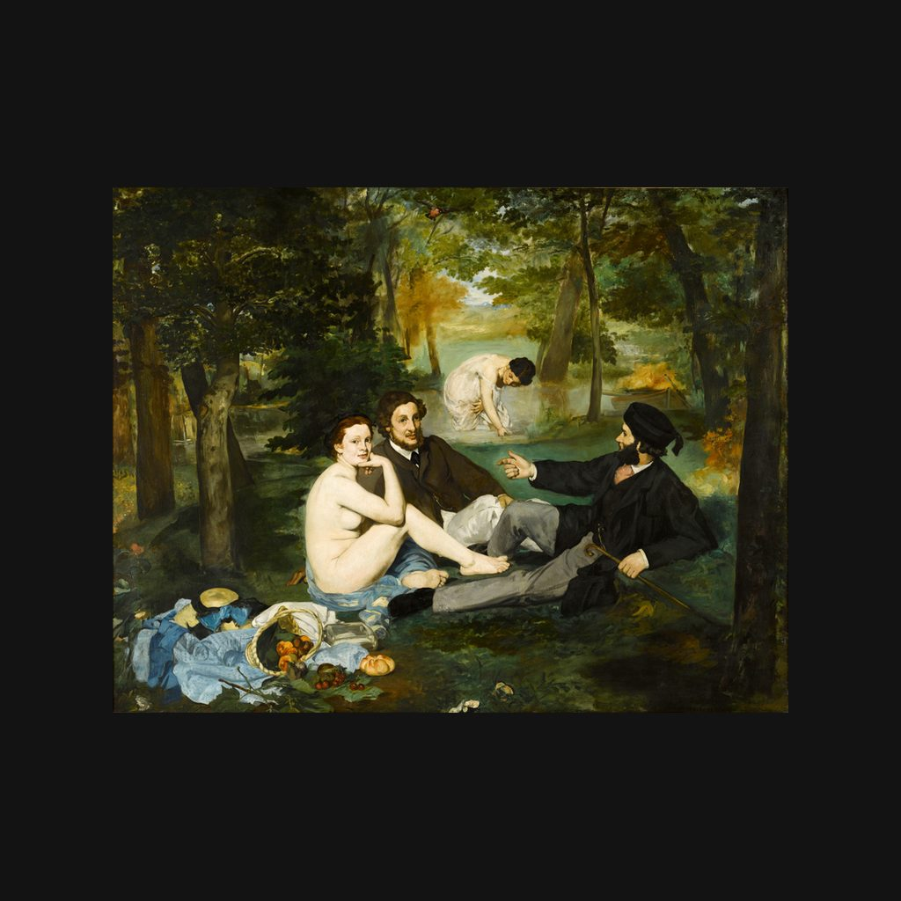

草地上的午餐
马奈 · 1863年
Le Déjeuner sur l'herbe
讲解节选
草地上，一个赤裸的女人坐在两个穿着整齐的男人身旁，直直地望着你。左下角，堆着衣服和吃的东西；后面树间的水边，还有一个穿浅色衣服的女子弯着腰。
这幅画叫《草地上的午餐》，原来叫《洗浴》，作者是爱德华·马奈，一八六三年的布面油画，高两米多，宽两米六。马奈跟托马·库蒂尔学过画，一八六一年在沙龙获得过荣誉提名。
— 普通话讲稿 · Artvery
完整讲解约 3 分钟，在 Artvery App 里收听。粤语、台湾国语、内地普通话三种语音，馆内对准作品即可识别播放。
即将上架 App Store
App 即将上架，敬请期待。上架后免费下载，每座博物馆单独购买，一次购买永久使用。
作品信息
- 作者
- 马奈
- 年代
- 1863年
- 尺寸
- 207 × 265 厘米
- 所在
- 奥赛博物馆 · 印象派画廊
- 馆藏编号
- RF 1668
奥赛博物馆参观攻略：必看名作和路线 · 奥赛博物馆中文语音导览